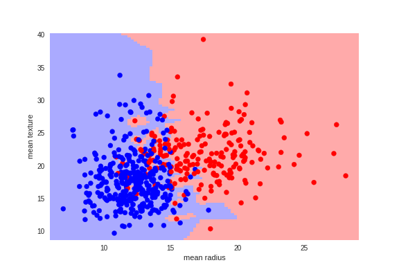
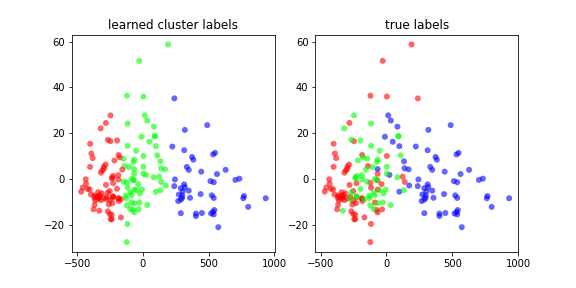
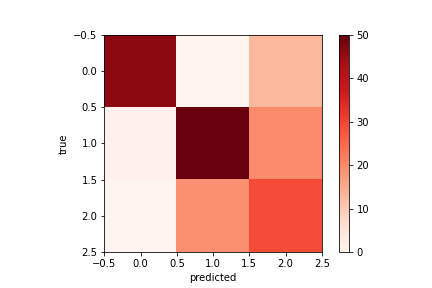

Portfolio
Task 1
Setting up web page, and embedding two charts
Football
The first chart tracks cumulative goals scored for home and away teams in a premier league season
Bitcoin
My second chart looks at the daily price of bitcoin
Task 2
Two charts, replicating one from the Financial Times and one that is my own
Cleaning the data to represent IMF lending as a percentage of global GDP
The most lending relative to global GDP at the time was in 1984, indicating that this would have been 'riskiest' year to lend.
Task 3
Python Work
Two charts: inline data objects and visual encodings
The first chart uses data from world bank (link to python cleaning here) to show how countries have progressed in the quest for clean drinking water for all. The graph is a barchart with a built-in slider to look at each year individualy.
The next graph uses the same data from the World Bank but displays it as multi series line chart
I chose this graph because it better demonstrates how each country changes year on year at a glance
Task 4
Data Scraping
This chart was scraped from wikipedia using read_html in Python. the link to the python notebook can be found here
I chose wikipedia for the ease of finding the table using inspect element, as this was my first scraper.
Task 5
Python Loops
These 9 charts were batch downloaded using this python notebook using the ONS API
Task 6
Maps
The first chart is a base map of Northern Ireland, with a tooltip that is used to display the constituencies. (python cleaning here)
Map with colour
This map shows the amount of electorate votes each constituency had on Sep 2021 by using colour
Task 7
Festival of Economics - produce two charts
In the Prices & Wages talk, Vicky Pryce said that UK situation of labour shortages is most similar to the US, to demonstrate this i compare the ratio of unemployed to vacancies over time for both countries (data downloaded using the FRED API and combined with Python)
From the two charts, it is clear to see that they both follow similar patterns in the labour market
Task 8
Advanced Charts - produce two charts that use advanced analytics (regression python notebook here)
Task 9
Machine Learning - Supervised
Hypothesis: Can Breast Cancer be successfully predicted using machine learning?
From the matplot graph we can see that successfully diagnoses most extreme cases, but has difficulty distinguishing cases in the average mean texture and radius.Python Notebook
Task 10
Machine Learning - Unsupervised
Hypothesis: Can clustering be used to group together wines by their characteristics?
 Results: The results show good levels of clustring between one wine and the other two, but incorrectly classifies 2 wines as the wrong one regularly. Python Notebook